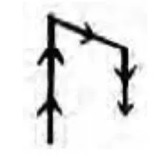
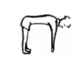

Rune Grimoire
Uruz
Modern Relevance
Uruz depicts the aurochs, the wild European cattle. It embodies strength, fortitude, and the power of the Gods. This rune signifies endurance, stamina, and the necessity of sacrifice.
Tree, Element, and Deity
Tree: birch
Element: earth
Deity: Thor
Meaning: auroch; the power of wild cattle
Names Across Dialects
| Dialect | Word | Meaning |
|---|---|---|
| Proto-Germanic | úruz | The aurochs |
| Gothic | úrus | The aurochs |
| Old English | úr | Ox, bison |
| Old Norse | úr | Drizzle, rain |
| Icelandic | Úr | Drizzle, rain |
| Norwegian | Ur | Aurochs |
Phonetic values: u, v
Esoteric interpretation: the aurochs as primal fertilizing essence
Ideographic interpretation: the horns of the aurochs, or falling drizzle
Cosmological Lore
Uruz is the mother of manifestation. In the mythology, this force is represented by the great cow Audhumla, who licked an enormous block of primordial ice to shape the primal androgyne Búri. Audhumla also sustained the cosmic giant Ymir with her milk. She herself was formed from the dripping rime produced when the world fire met the world ice. Uruz is also the unmanifested energized essence from which both the cosmic ice and Audhumla originally emerged.
This rune embodies the patterning and formulating power of the multiverse, the source of all ordering principles that lead to the final formulation of the world. It is the unmanifested pattern of matter (in contrast to the antimatter nature of Isa). Uruz is the cosmic seed, the world force analogous to the creative vital essence.
The Forming Force
Uruz contains the mystery of the formulation of the self. It is a composite paradigm of all aspects of the psychosomatic complex, just as the multiverse is framed from the various worlds. Critically, Uruz is the forming force, not the form itself (contrast with Hagalaz).
This rune is the shaping power that defines the origin and destiny of all things. The very shape of the stave illustrates the pattern of manifestation: energy drawn up into the time-space continuum until it is eventually pulled back to its source. Uruz is the eternal reservoir of archetypal patterning.

Wisdom, Health, and Vital Strength
Because of its shaping power, Uruz symbolizes wisdom and lore as the pattern of preserved tradition sprung from the natural order. A society in accordance with natural order is a healthy society, and in the personal realm this rune governs good physical health. Uruz promotes strong and harmonious organic systems. It is the rune of vital strength and virility.
Rune Character
The aurochs was a species of wild ox that lived in European forests until it was hunted to extinction by the 1600s. This rune is the cosmic seed, embodying beginnings and origins. It is masculine in nature, giving strength, endurance, and athleticism. It is a rune of courage and boldness, freedom and rebellion. Ur represents the horn or the erect phallus, resurrection, and life after death: coming, being, and passing away.
Keywords
- Archetypal patterning
- Organic organization
- Wisdom
- Health
- Vital strength
Galdr
uruz uruz uruz
uuuuurrrrr
uuuuuuuuuu
Stadha
Bend at the waist with the back horizontal and parallel to the ground. Arms and fingertips point toward the ground. The head should face toward the east.

Magickal Workings
- Shaping and forming circumstances creatively through will and inspiration
- Healing and maintenance of good mental and physical health
- Bringer of fortunate circumstances
- Induction of magnetic earth streams
- Realization of causality
- Knowledge and understanding of the self
- Transfer of energies, used for projecting or drawing in of energy
Constructive Applications
Incites action and sexual potency. Freedom. Repeated use of the rune will gradually increase the amounts of energy one can handle at any given time, helping grow one's own reserves of power. When using Uruz with another rune, it works to increase the power of any rune it is paired with for good or ill. Green and shimmering gold work well with the energies of this rune.
Baneful Applications
Used to threaten and destroy.
Stadhagaldr Rites
Increase in Magickal Power
Uruz shapes the rune might that flows through the vitki during this rite:
Rune-might is shaped by Uruz.
See Stadhagaldr (Posture Magick) for the full rite.
Increase in Creative Force
Uruz shapes the raw rune-might for creative work:
Uruz shapes the rune-might.
See Stadhagaldr (Posture Magick) for the full rite.